💻 AI-900
機器學習的基本準則
Lecturer: Porshen Lai
Department of Finance
Chihlee University of Technology
2025, Winter
模型的種類
監督式學習
|
|||
非監督式學習
|
|||
半監督式學習
|
|||
增強學習
|
|||
分類模型: 決策樹 (Decision Tree)
- 監督式學習，標籤值為「是」或「否」
- 可適用於分類或迴歸模型
- 算法接近人類的思考邏輯，容易理解運算原理與預測結果
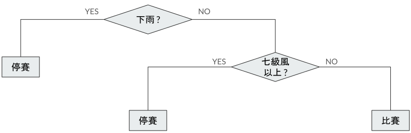
- 速度快，適合處理大數據
- 深度過深時容易擬合過度
分類模型: 羅吉斯回歸
- 監督式學習，運用於分類模型
[1]
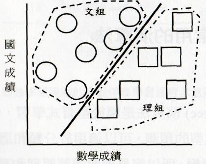
- 找出一條能夠將所有資料清楚地分開的直線
- 預測範圍 0 ~ 1 代表目標值為 「是」或「否」的機率
- 不是合解決非線性問題
分類模型: 支援向量機 (SVM)
- 監督式學習
- 可以畫出最能分隔資料的邊界，適用於分類，迴歸和偵測離群值
[1]
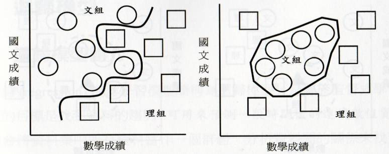
- 適合多高維度，訓練資料少的資料集。
分類模型: K 近鄰 (K-NN)
- 監督式學習，分類模型
- 將資料轉為向量，再用資料間的距離來換算成資料的近似度
- 根據近似度作為分類的標準
- 選取近似度最高的Ｋ筆資料所屬最多的分類
[1]
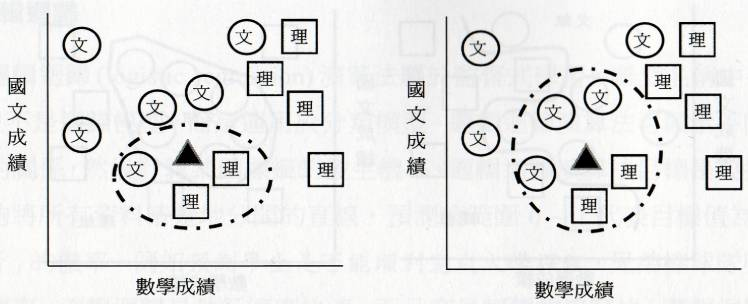
- 各分類樣本數量差異多時易錯誤
分類模型: 貝氏分類器 (Naive Bayes Classifier)
- 根據事件的發生次數，來計算事件發生的機率。
- 貝氏分類為貝氏定理 (Bayes’ theorem) 的應用。模型中假設所有的特徵都是獨立不會相互影響，所以使得計算大大簡化。
- 經過計算可以得知某筆資料對各標籤目標的發生機率，機率最高的標籤就是所屬的分類。
- 資料量夠多時，簡單又有效，不易過度擬合。特徵數多時，易有運算誤差。
評估分類模型常用的指標
| 預測值\真實值 | 真 | 假 |
T: 預測正確(True)
F: 預測錯誤(False)
P: 陽性(Positive)
N: 陰性(Negative)
|
|---|---|---|---|
| 真 | TP 真陽性 |
FP 假陽性 |
|
| 假 | FN 假陰性 |
TN 真應性 |
| 準確率 | (TP+TN) / (TP+FP+FN+TN) |
|---|---|
| 精確率 | TP / (TP+FP) |
| 召回率 | TP / (TP+FN) |
| F值 | ((a^2+1) *精確率*召回率) / (a^2*精確率+召回率) |
| 曲線下面積 | ROC曲線下的面積，ROC X座標為假陽率，Y座標為真陽率。 |
迴歸模型
- 用來預測一段時間後的連續數值資料
- 必須使用有標記的資料
- 所預測的目標值為數值
- 常用的演算法
- 線性迴歸演算法
[1]
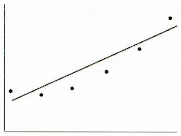
- 多項式迴歸演算法
[2]
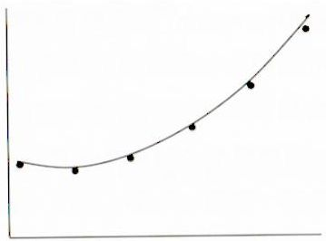
- 線性迴歸演算法
[1]
叢集模型
- 不用標記標籤資料
- 根據共同特性（特徵值）進行項目分組
- 常用演算法：
- Ｋ－Ｍｅａｎｓ
[1]
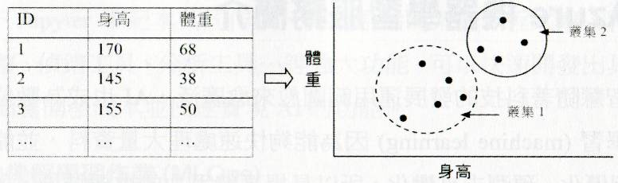
- Ｇａｕｓｓｉａｎ Ｍｉｘｔｕｒｅ
- Ｋ－Ｍｅａｎｓ
[1]
機器學習的工作流程
問題定義
| |||||||||||||||||||||||||||||||||||||
資料蒐集
| |||||||||||||||||||||||||||||||||||||
資料準備
| |||||||||||||||||||||||||||||||||||||
模型選擇
| |||||||||||||||||||||||||||||||||||||
模型定型與模型評估
| |||||||||||||||||||||||||||||||||||||
參數調整
| |||||||||||||||||||||||||||||||||||||
模型部署 | |||||||||||||||||||||||||||||||||||||
機器學習的工作流程
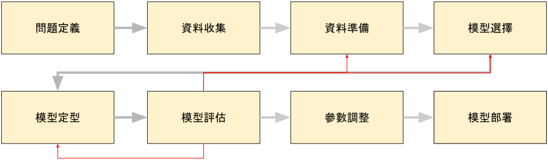
Azure 機器學習服務 (Machine Learning Service)
- 內建多種模型開發方式
- 機器學習設計工具, 自動化機器學習, Jupyter 筆記本共同作業
- 開放原始碼架構, 程式庫, 特徵工程, 超參數調整, 偵錯工具, 分析工具
- 可靠的機器學習作業 (MLOps)
- Machine Learnng Operations
- 在內部，邊緣和多重雲端環境中，部署及管理眾多模型
- 快速部屬，評分機器學習模型，使用即時和批次方式進行預測
- MLOps 工具持續監視模型效能計量，偵測資料變動，重新定型以改善模型效能
- 追蹤紀錄，查核管理
- 提供完整的模型評估功能
- 平台多元，安全並符合規範
- Azure 自動化機器學習 (Automated Machine Learning)
- Azure 機器學習設計工具 (Azure Machine Learning Designer)
- 資料和計算管理
- 管線 (Pipelines)
Azure Machine Learning 方案的生命週期
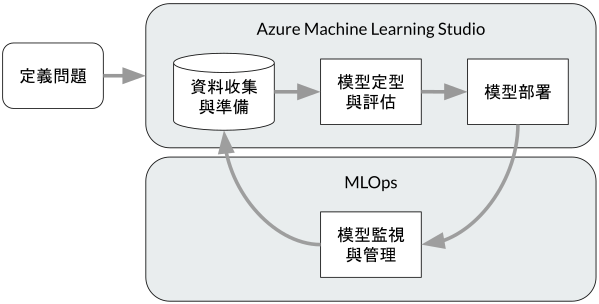
Azure Machine Learning Studio 建立模型的方式
- 筆記本
- 使用 Python 或 R語言自行編寫程式碼
- 自動化 ML
- 使用精靈透握一連串對話方塊，引導設定模型的條件
- 設計工具
- 可視的畫布介面，拖拉元件，管線，和資料集的方式建立 ML管線
開啟
ML 服務建立
ML 工作區建立
管線提交
管線評估
模型部署
模型
使用設計工具建立模型管線
- 可以隨時儲存管線草稿
- 管線規劃完成後，執行前選取功能表右邊的「設定」功能，來設定進行機器學習模型計算的資源。
- 發佈推斷管線時，應設定REST端點，驗證金鑰兩個參數來存取 Web Service。
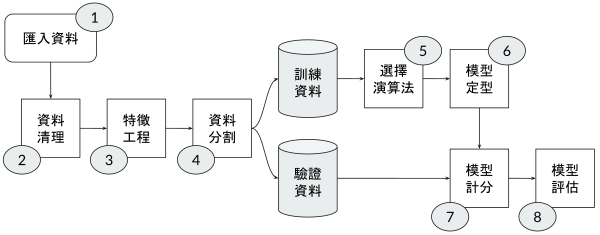
關於機器學習模型的基本概念
您使用未標記的資料定型迴歸模型。
是
否
迴歸是監督式學習，必須使用標記的資料集 (即有特徵和標籤)。
分類技術用來預測一段時間後的連續數值。
是
否
預測連續數值是迴歸；分類是用來預測類別/類別標籤。
依共同特性分組項目為叢集範例。
是
否
叢集 (Clustering) 是非監督式學習，目的是根據相似性將資料點分組。
關於標籤 (Label) 的資料型別要求
若為迴歸模型，標籤必須是數值。
是
否
迴歸模型預測連續數值 (例如價格、溫度)。
若為叢集模型，必須提供標籤。
是
否
叢集是非監督式學習，不需要標籤。
若為分類模型，標籤必須為數值。
是
否
分類模型的標籤是類別 (Category)，例如「是/否」、「通過/不通過」。雖然在電腦中可能用 0 和 1 表示，但概念上它是離散的類別。
機器學習工作與模型配對
根據人口統計資料為乘客指派類別
分類
迴歸
叢集
預測類別。
根據飛行距離預測消耗的燃油量
分類
迴歸
叢集
預測連續數值 (燃油量)。
根據人口統計資料預測乘客是否會錯過他們的航班
分類
迴歸
叢集
預測類別 (會/不會錯過)。
下列哪個模型可用以預測拍賣品售價?
分類
迴歸
叢集
售價是一個連續數值，因此使用迴歸模型。
您該使用哪種機器學習類型預測下個月售出的禮品卡數量?
分類
迴歸
叢集
數量是一個數值，因此使用迴歸模型。
您需要預測某個區域的動物族群規模。
應該使用下列哪一種 Azure Machine Learning 類型?
分類
迴歸
叢集
族群規模是一個數值，因此使用迴歸模型。
您想預測某國家公園內動物的數量。
應該使用下列哪種類型的 Azure Machine Learning 模型類型?
分類
迴歸
叢集
數量是一個數值，因此使用迴歸模型。
您想找出具有相似購物習慣的人員族群。
該使用下列哪種機器學習類型?
分類
迴歸
叢集
找出相似性並分群是叢集模型的應用。
關於特徵 (Feature) 和標籤 (Label)
| 日期 | 時間 | 質量(公斤) | 溫度(°C) | 品質測試 (通過/不通過) |
|---|---|---|---|---|
| 2022年11月26日 | 18:32:07 | 2.109 | 62.4 | 通過 |
| 2022年11月26日 | 18:32:49 | 2.102 | 62.5 | 通過 |
| 2022年11月27日 | 02:31:56 | 2.097 | 66.5 | 不通過 |
「質量(公斤)」為特徵。
是
否
質量、溫度等是用來預測結果 (品質測試) 的輸入變數。
「品質測試」為標籤。
是
否
品質測試的結果 (通過/不通過) 是模型要預測的目標變數。
「溫度(°C)」為標籤。
是
否
溫度是特徵。
您需要使用以下資料集來預測指定客戶的收入範圍。
| 名字 | 姓氏 | 年齡 | 教育程度 | 收入範圍 |
|---|---|---|---|---|
| Jack | Chang | 42 | 大專 | 25,000-50,000 |
| Mary | Natti | 38 | 高中 | 25,000-50,000 |
| David | Shelton | 54 | 大專 | 50,000-75,000 |
| Max | Adler | 25 | 大專 | 75,000-100,000 |
| Erice | Jansen | 72 | 高中 | 50,000-75,000 |
應該將下列哪兩個欄位用作特徵? (多選)
名字
姓氏
教育程度
收入範圍
年齡
- 標籤 (Label) 是「收入範圍」 (預測目標)。
- 特徵 (Feature) 是用來預測收入範圍的輸入變數，通常是與收入相關的資訊，例如年齡和教育程度。
- 名字/姓氏通常不是預測模型的有效特徵。
| 家庭收入 | 郵遞區號 | 房價類別 |
|---|---|---|
| 20,000 | 42055 | 低 |
| 23,000 | 52041 | 中 |
| 80,000 | 78960 | 高 |
請問家庭收入屬於下列何者?
特徵
標籤
家庭收入：用來預測房價類別的輸入變數 => 特徵。
請問房價類別屬於下列何者?
特徵
標籤
房價類別：模型要預測的目標變數 => 標籤。
關於機器學習的過程，應如何分割用於訓練和評估的資料?
用特徵進行訓練，標籤則用來進行評估。
用標籤進行訓練，特徵則用來進行評估。
將資料隨機分割為訓練資料行和評估資料行。
將資料隨機分割為訓練資料列和評估資料列。
訓練和評估資料應從原始資料集的資料列 (樣本/記錄) 中隨機抽取，以確保兩組資料能代表整體。
關於 Azure Machine Learning 設計工具 (Designer)
Azure Machine Learning 設計工具提供拖放視覺效果畫布，以供建置、測試和部署機器學習模型。
是
否
Designer 的核心功能就是視覺化的拖放介面。
Azure Machine Learning 設計工具提供可將進度儲存為管線草稿。
是
否
在 Designer 中建立的工作流程稱為管線 (Pipeline)。
Azure Machine Learning 設計工具可併入自訂的 JavaScript 函式。
是
否
Designer 主要支援 Python/R 程式碼模組，不直接支援 JavaScript 函式。
關於自動化機器學習 (Automated ML, AutoML)
自動化機器學習讓您能夠將自訂 Python 程式碼包含在訓練管線中。
是
否
AutoML 允許使用者在訓練前/後加入自訂腳本來處理資料或結果。
自動化機器學習實作機器學習解決方案無需程式設計經驗。
是
否
AutoML 的主要優勢是自動選擇演算法和超參數，降低了對程式設計經驗的要求。
自動化機器學習使您能夠在互動式畫布中以視覺方式連接資料集和模組。
是
否
這是 Designer 的功能。AutoML 則是以配置式或程式碼為主的介面。
應該如何使用 Azure Machine Learning 設計工具建立叢集模型並評估該模型?
將原始資料集分割成特徵和標籤資料集，使用特徵資料集進行評估。
將原始資料集分割成定型和測試資料集，使用測試資料集進行評估。
將原始資料集分割成定型和測試資料集，使用定型資料集進行評估。
使用原始資料集進行定型和評估。
無論是監督式 (分類/迴歸) 還是非監督式 (叢集) 模型，標準流程都是：將資料分割為訓練集和測試集 (或稱驗證集)，用訓練集定型模型，用測試集評估模型效能。
使用 Azure Machine Learning 設計工具發佈推斷管線時，您應該使用下列哪兩個參數來存取 Web 服務? (多選)
模型名稱
REST 端點
驗證金鑰
定型端點
部署為 Web 服務後，外部應用程式需要知道服務的 REST 端點 URL 和用於安全連線的 驗證金鑰 (或 token) 才能呼叫。
關於叢集 (Clustering) 模型的運用實例
根據不同使用量來統計資料分組文件，為叢集模型的運用實例。
是
否
分組是叢集的核心目的。
根據症狀和診斷測試結果分組相似的病患，為叢集模型的運用實例。
是
否
分組相似實體是叢集的另一個典型應用。
根據花粉數預測某人會罹患輕度、中度還是嚴重的過敏症狀，為叢集模型的運用實例。
是
否
這是分類 (預測類別) 的運用實例。
您有一個資料集，其中包含指定時間內發生的計程車行程訊息。您需要訓練一個模型來預測計程車行程的費用，應該用什麼選項作為特徵?
各計程車行程的車費
各計程車行程的單程距離
資料集中的計程車行程數
各計程車行程的單程 ID
- 標籤 (Label) 是「車費」 (預測目標)。
- 特徵 (Feature) 是用來預測車費的輸入變數，其中單程距離通常與車費呈正相關。
使用上次的消費日期、消費頻率、消費金額 (RFM) 值，來識別客戶群中的客層，為下列何種機器學習模型的範例?
分類
迴歸
叢集
正規化
識別客戶群或區隔客層是根據相似的消費行為進行分群，這是叢集模型的典型應用。
1.
載入及準備資料集
定型模型
對驗證資料集評估模型
對原始資料集評估模型
將資料隨機分割為訓練資料與驗證資料
2.
載入及準備資料集
定型模型
對驗證資料集評估模型
對原始資料集評估模型
將資料隨機分割為訓練資料與驗證資料
3.
載入及準備資料集
定型模型
對驗證資料集評估模型
對原始資料集評估模型
將資料隨機分割為訓練資料與驗證資料
4.
載入及準備資料集
定型模型
對驗證資料集評估模型
對原始資料集評估模型
將資料隨機分割為訓練資料與驗證資料
在 Azure Machine Learning 設計工具中，您可以使用下列何者，以探索潛在特徵資料行中值的分佈。
Normalize Data (正常化資料) 模組
Select Columns in Dataset (選取資料集中的資料行) 模組
資料集輸出視覺化特徵
評估結果視覺化特徵
在 Designer 中，右鍵點擊資料集模組的輸出並選擇「視覺化」，可以查看資料集的統計摘要和資料行中值的分佈，這對特徵探索至關重要。
選取資料集中的資料行
合併資料
分割資料 (Split Data)
新增資料列
分割資料 (Split Data) 模組專門用於將一個資料集劃分為兩個或多個子集，例如訓練集和測試/驗證集。
評估模型效能時，下列何者使用 0 和 1 值的網格顯示預測和實際的正負值。
AUC 計量
混淆矩陣 (Confusion Matrix)
ROC 曲線
閾值
混淆矩陣是一個表格，用於視覺化分類演算法的性能，它顯示了真陽性 (TP)、真陰性 (TN)、假陽性 (FP) 和假陰性 (FN) 的數量。
機器學習建立迴歸模型時，標籤應該使用哪種資料型別?
布林值
日期時間
數值
文字
迴歸模型的輸出（標籤）是連續數值。
針對下列何者，您可使用資料集的其中一部分來準備機器學習模型並保持資料集平衡，以驗證結果。
時間限制
特徵工程
MLflow 模型
模型定型
模型定型 (Training) 和驗證 (Validation) 過程會使用到資料集的分割部分 (訓練集和驗證集)，並且需要確保資料集平衡。
Azure Machine Learning 設計工具可讓您建立機器學習模型，是藉由下列何者。
在視覺效果畫布上新增與連結模組
自動執行一般資料準備工作
自動選取演算法以建置最精確的模型
使用 Code First 筆記本體驗
Designer 的核心是視覺化畫布和模組。選項 ② 和 ③ 是 AutoML 的特點；選項 ④ 是 SDK 的特點。
下列何者會針對指定的計算目標執行工作，並且為實驗和工作流程進行系統化追蹤 ?
元件
資料集
管線
Azure Machine Learning 作業
資料集包含下圖資料行
| 名稱 | 類型 |
|---|---|
| Column A | 整數 |
| Column B | 數值 |
| Column C | 數值 |
| Column D | 數值 |
| Column E | 數值 |
你有一個根據其他數值資料行預測 ColumnE 值的機器學習模型。
請問是下列哪一種模型?
迴歸
分析
叢集
預測數值 (ColumnE 是數值) 是迴歸模型的任務。
您想要使用 Azure Machine Learning 自動化機器學習 (自動化 ML)、建置一個模型並加以訓練。
您應該先建立下列哪一項?
Jupyter Notebook
資料集
已註冊的資料集
Machine Learning 設計工具管線
無論使用 AutoML 或 Designer，訓練模型的第一步都是載入/建立用於訓練的資料集。
請問您應該採取什麼措施以減少機器學習分類模型所產生的誤判為真之數目?
增加定型反覆運算的數目
修改有利於錯誤否定的閥值
修改有利於誤判為真的閥值
在定型資料中納入測試資料
- 誤判為真 (False Positive, FP)：實際為否，但模型預測為是。
- 要減少 FP，必須提高模型判斷為「是」的門檻 (閥值)，這樣會讓模型更「保守」，從而增加「誤判為否 (False Negative, FN)」（錯誤否定）的數量。因此，這個調整有利於錯誤否定。
您使用自動化機器學習使用者介面(UI)建置機器學習模型。
您必須確保此模型符合 Microsoft 責任 AI 透明度準則。
試問您應該如何做?
將並行反覆運算上限設為 [0]
啟用最佳解釋模型
將驗證類型設為 [自動]
將主要計量設為 [精確度]
你需要追蹤數個使用 Azure Machine Learning 進行訓練的模型版本。
請問你該怎麼做 ?
解釋模型
註冊模型
佈建推斷叢集
註冊訓練資料
您需要使用 Azure Machine Learning 設計工具建置一個能預測單車價格的模型，請問下圖 A, B, C 中應該使用哪種模組類型來完成此模型 ?
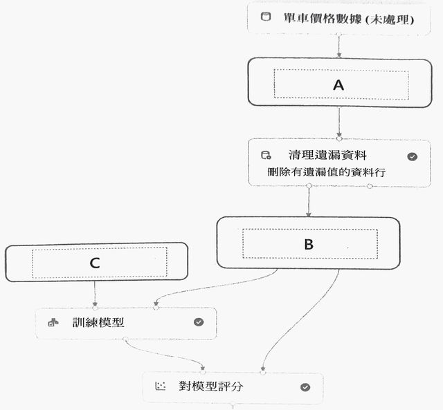
A
轉換為 CSV
K 均值叢集
線性迴歸
選擇資料集中的資料行
分割資料
摘要資料
B
轉換為 CSV
K 均值叢集
線性迴歸
選擇資料集中的資料行
分割資料
摘要資料
C
轉換為 CSV
K 均值叢集
線性迴歸
選擇資料集中的資料行
分割資料
摘要資料
您有一個資料集，包含銷售資料，並定義了標籤。
您需要建立一個模型以根據銷售資料分類客戶類型。
該使用哪種機器學習類型?
分類
叢集
迴歸
分類是用於預測離散類別 (客戶類型) 的監督式學習。
Azure Data Factory
Azure 自動化
Azure Kubernetes Service (AKS)
Azure Logic Apps
您有一個資料集，包含了燃油樣本的實驗資料。您需要根據測量的密度預測可從樣本中取得的能量 (千焦耳)。您應該使用下列哪一種類型的 AI 工作負載?
分類
叢集
迴歸
能量 (千焦耳) 是一個連續數值，因此使用迴歸。
您有一個資料集，您需要建置一個 Azure Machine Learning 分類模型來識別瑕疵產品。
您應該先採取什麼措施 ?
載入資料集
建立叢集模型
將資料分割成定型和測試資料集
建立分類模型
您有一個 Azure Machine Learning 管線，其中包含一個分割資料模組。
分割資料模組會輸出至定型模型模組和評分模型模組。
以下何者為分割資料模組的功能 ?
建立定型和驗證資料集
選取必須包含在模型中的資料行
轉移具有缺少資料的紀錄
調整數值變數，將它們保持在一致的數值範圍內
機器學習模型中，用來當做輸入使用的各組資料值稱為?
特徵
函式
標籤
執行個體
特徵是模型的輸入變數。
從資料集中隨機抽取的子資料集。
子資料集通常用於協助模型進行什麼任務 ?
演算法
特徵
標籤
驗證
Jasper 有一個 Azure Machine Learning 模型，使用臨床資料預測患者是否患有某種疾病。
Jasper 清理並轉換了臨床資料。
Jasper 需要確保模型準確度可進行驗證。請問您要協助 Jasper 接下來做什麼 ?
使用臨床資料訓練模型
使用自動化機器學習(自動化 ML)
將臨床資料分割成兩個資料集
使用臨床資料驗證模型
小明有汽車銷售的大型資料集。
他需要根據汽車類型訓練自動化機器學習(自動化ML)模型，以預測汽車銷售額。
請將機器學習模型與適當的答案進行配對。
試問要使用下列哪像工作 ?
自然語言處理
電腦視覺
迴歸
預測時間序列
分類
預測數值的監督式機器學習模型。
分類
迴歸
叢集
迴歸 | 預測連續數值。
預測類別的監督式機器學習模型。
分類
迴歸
叢集
分類 | 預測離散類別。
根據特徵將相似實體進行分組，屬於非監督式機器學習模型。
分類
迴歸
叢集
叢集 | 非監督式學習的分組。
小明有 Azure Machine Learning 模型會產生大量的錯誤否定。
他需要再不重新訓練模型的情況下降低錯誤否定的數量。
請問應該採取什麼措施 ?
調整閥值
增加訓練資料量
增加定型反覆運算的數目
使用其他機器學習模型
在機器學習的過程中，您何時該檢閱評估計量 ?
使用驗證資料測試模型之後。
清理資料之後。
定型模型之前。
選擇模型的類型之前。
根據接單數，下列哪一項可用來預測外送員將會加班的時數?
分類
叢集
迴歸
加班時數是一個連續數值，因此使用迴歸模型。